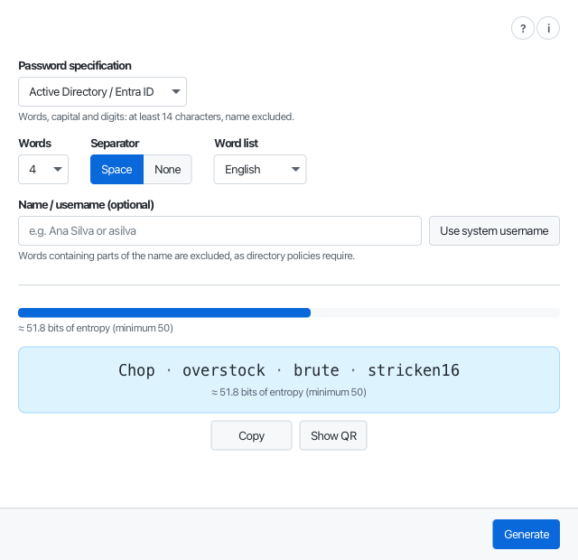
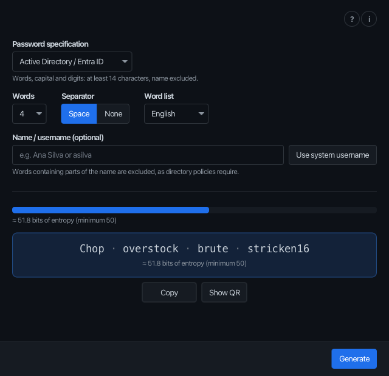

Password Generator
Strong, memorable passwords — safe on every keyboard.
Web app · macOS · Linux — the desktop apps carry their own Java runtime; the web app needs nothing installed.
password /ˈpɑːswɜːd/ noun
- a secret sequence of characters used to prove who you are.
- something everyone was told to make impossible to remember.
A good one resolves the contradiction: impossible to guess, easy to type — even on the wrong keyboard.


Safe on every keyboard
Only characters that sit on the same physical key on QWERTY, QWERTZ and AZERTY layouts — so a password typed into a console set to the wrong layout still comes out right.
Strength you can see
Every specification has a minimum strength, shown in bits before you generate. Word counts that could not reach it are simply not offered.
Words, not noise
Passwords built from common words are long enough to be strong and plain enough to type from memory. Directory rules about your own name are honoured to the letter.
Private by design
Nothing you generate leaves the device: no accounts, no telemetry, no network access to make a password. The web app works offline once installed.
Eight word lists, nine languages
English, Catalan, German, Spanish, French, Italian, Portuguese and Chinese word lists — with the interface in those and Japanese. Where the words come from.
Across to your phone
Show the password as a QR code for a camera to read — light is the only channel, and the code hides itself after a minute. User guide.
Privacy
This site is static files served by GitHub Pages: no cookies, no analytics, no tracking scripts. Your browser makes one request to GitHub's API, to show the latest version number on the download button; pages served from github.io appear in GitHub's ordinary server logs, covered by the GitHub Privacy Statement. The web app under app/ makes no request beyond loading its own files. The application's own privacy promises are stronger still: see the user guide.